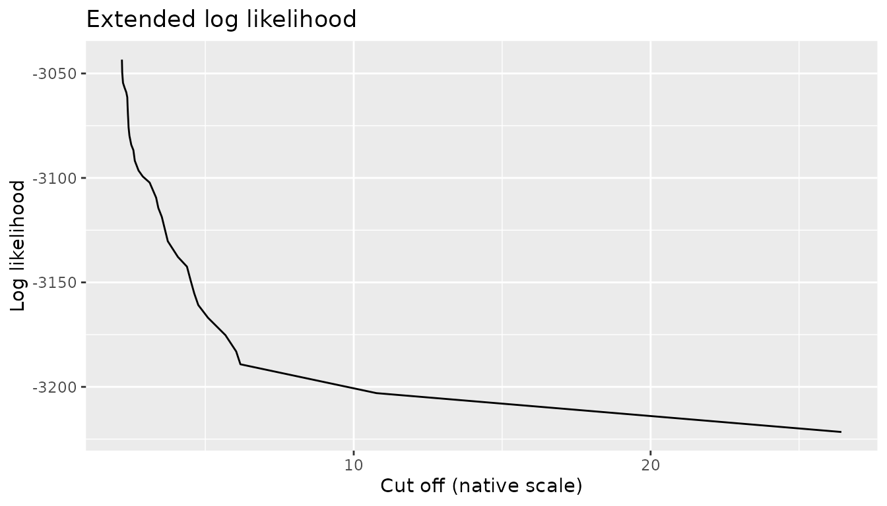
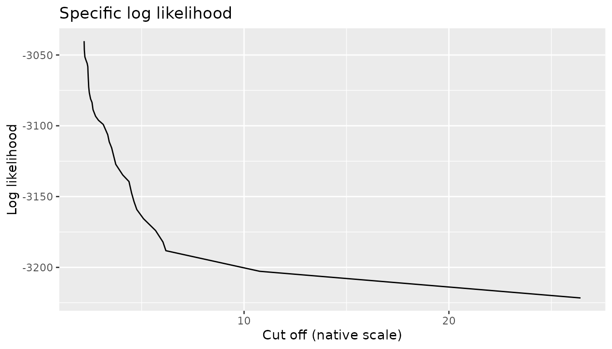
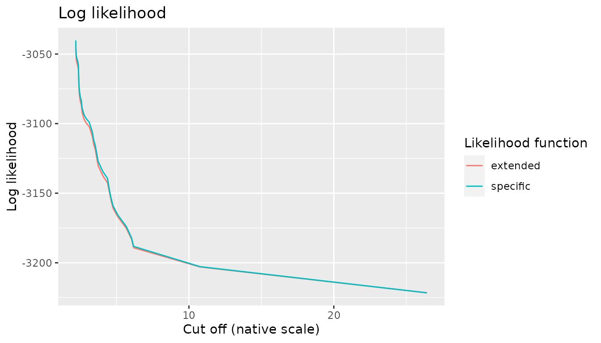

Most of the theoretical papers on Variable Length Markov Chains
(VLMC, see vignette("variable-length-markov-chains")) focus
on time series indexed by \(\mathbb{Z}\) which simplifies the analysis.
In practice time series are obviously finite which introduces some
difficulties associated to the initial observations. In particular, the
definition of a likelihood function is not entirely obvious.
This vignette discusses the case of VLMC, but the discussion applies to VLMC with covariates with minimal adaptation.
Executive summary
For model selection, we recommend to use a likelihood function that disregards the first few observations for which a (CO)VLMC cannot provide a context. This is based on the truncated likelihood function. For all practical uses such as prediction and sampling, we recommend to use a notion of extended contexts.
Likelihood functions for Markov chains
Let us consider a doubly infinite time series \(X_{i\in\mathbb{Z}}\) generated by some model \(\mathcal{M}\). The likelihood function associated to a finite observation of the time series, \((x_i)_{1\leq i\leq n}\), is \(\mathbb{P}_{\mathcal{M}}(X_1=x_1,\ldots,X_n=x_n)\).
If \(\mathcal{M}\) is a Markov chain of order \(d\), then we have \[ \mathbb{P}_{\mathcal{M}}(X_{d+1}=x_{d+1},\ldots,X_n=x_n)=\prod_{i=d+1}^n\mathbb{P}_{\mathcal{M}}(X_i=x_i|X_{i-1}=x_{i-1},\ldots,X_{i-d}=x_{i-d}). \] Thus if we know only \(x_{1\leq i\leq n}\) we can compute only the likelihood of \((x_i)_{d+1\leq i\leq n}\).
In practice, comparing models with different orders should be done only using the likelihood functions based on the same subset of the observed time series, i.e. using the highest order. As pointed out in several papers this has no impact on asymptotic results (see e.g. Garivier, A. (2006), Consistency of the unlimited BIC context tree estimator. IEEE Transactions on Information Theory, 52 (10) 4630–4635).
Likelihood functions for VLMC
Truncated solution
The simplest way to define a likelihood function for a single VLMC is to consider it as a Markov chain of the order given by the length of its longest context (i.e. of the order of the VLMC).
Specific contexts
Another approach considers the fact that the past of \((x_i)_{1\leq i\leq n}\) is unknown and replace it by a collection of specific contexts that summarize this unknown past. This is used in Garivier’s paper cited above. By definition, each observation that does not have a actual context in the VLMC appears only once and thus is perfectly predicted by the empirical distribution associated to it. It has therefore a likelihood of 1. In practice, this amounts to identifying \(\mathbb{P}_{\mathcal{M}}(X_1=x_1,\ldots,X_n=x_n)\) to \(\mathbb{P}_{\mathcal{M}}(X_{d+1}=x_{d+1},\ldots,X_n=x_n)\).
In terms of parameters for AIC/BIC calculation, this corresponds to adding a specific parameter for each of the \(d\) initial values, where \(d\) is the order of the VLMC. Notice that this departs from Garivier’s approach cited above (in this paper, each initial value is associated to a full context and thus to \(|S|-1\) parameters if \(S\) is the state space).
Extended contexts
Another approach considers extended/approximate contexts for the \(d\) initial values. Indeed each observation \(x_i\) for \(1\leq i\leq d\) can be considered has having its context partially determined by \((x_1,\ldots, x_{i-1})\), in particular by the empty context for \(i=1\). Let us consider for instance \(x_1\) and the empty context (the root of the context tree). If \(d\geq 1\), we cannot determine the context of \(x_1\) without values of \((x_{-d+1},\ldots, x_0)\) even if the empty context is a valid one. However, we can assign this empty context to \(x_1\) because of the lack of information. More generally, we can traverse the context tree using as many past values as available and stop in the corresponding node which is then interpreted as a context using the frequencies collected during the construction of the VLMC.
In terms of parameters, this adds to the VLMC an additional extended context for each node of the context tree which is not a context. For instance, in a binary state space \(S=\{0, 1\}\), one may consider a Markov Chain of order 1. In this case, we have two contexts \(0\) and \(1\), and the root node of the context tree is not a proper (empty) context. To compute the likelihood of the first observation, we need therefore a new extended context, the empty one.
Complete example
Let us revisit the California earth quakes example proposed in
vignette("variable-length-markov-chains"). The model is
obtained as follows (see the vignette for details):
California_centre <- data.frame(longitude = -119.449444, latitude = 37.166111)
distances <- geodist(globalearthquake[, c("longitude", "latitude")],
California_centre,
measure = "geodesic"
)
California_earth_quakes <- globalearthquake[distances < 2e6, ] ## distances are in meters
California_weeks <- rep(0, max(globalearthquake$nbweeks))
California_weeks[California_earth_quakes$nbweeks] <- 1
California_weeks_earth_quakes_model <- tune_vlmc(California_weeks,
initial = "truncated",
save = "all"
)
model <- as_vlmc(California_weeks_earth_quakes_model)
draw(model, prob = FALSE)
#> * (5126, 1291)
#> +-- 0 (4185, 940)
#> | +-- 0 (3460, 725)
#> | | '-- 0 (2883, 577)
#> | | '-- 0 (2421, 462)
#> | | '-- 1 (358, 103)
#> | '-- 1 (724, 215)
#> '-- 1 (940, 351)The optimal model according to the BIC has an order of 5 and thus the simple truncated log likelihood is obtained by considering only the observations starting at index 6. We disregard the first 5 observations. The corresponding log likelihood is
loglikelihood(model, initial = "truncated")
#> 'log Lik.' -3182.077 (df= 6, nb obs.= 6412, initial="truncated")Using specific contexts amounts to assuming perfect predictions for the first five observations. The log likelihood is not modified, but it covers now the full time series, i.e. 6417 observations. The number of parameters is increased as the initial value is now associated to a specific parameter leading to a total of 11 parameters.
loglikelihood(model, initial = "specific")
#> 'log Lik.' -3182.077 (df= 11, nb obs.= 6417, initial="specific")The extended context approach is the most complex. For the first observation, we use the empty context, i.e. the root of the context tree. The associated empirical distribution is \(\mathbb{P}(X_1=1)=\frac{1291}{5126+1291}\simeq0.201\). Its contribution to the log likelihood is therefore \(\log \mathbb{P}(X_1=0)\simeq -0.225\) as the first observation is equal to 0.
As the root node is not a proper context, the specification of its associated empirical distribution contributes to the total number of parameters of the model (i.e. it adds a parameter to the total).
For the second observation, \(X_2=0\), the candidate context is \(0\). However, \(0\) is again not a proper context we should normally look for \(X_{0}\) and older values to find a proper context. In the extended approach, we consider the empirical distribution of values following a 0 in the time series, which is given by \(\mathbb{P}(X_t=1|X_{t-1}=0)=\frac{940}{4185+940}\simeq0.183\). The contribution of this observation to the log likelihood is therefore \(\log \mathbb{P}(X_t=0|X_{t-1}=0)\simeq -0.203\). In addition, this extended context adds again a parameter to the total.
The following observations \(X_3\), \(X_4\) and \(X_5\) have all proper contexts and contribute in a normal way to the (log) likelihood without the need for additional parameters. Notice that the number of additional parameters does not depend on the initial sequence but on the structure of the context tree. Notice also that while the corresponding nodes are contexts, they are not the contexts of those three values. Those contexts cannot be computed due to the lack of older values.
The final value is
loglikelihood(model, initial = "extended")
#> 'log Lik.' -3183.052 (df= 8, nb obs.= 6417, initial="extended")Monotonicity
Nested models
For a given time series, the candidate VLMCs generated by the context algorithm follow a nested structure associated to the pruning operation: the most complete context tree is pruned recursively in order to generate less and less complex trees. A context in a small tree is also a suffix of context of a larger tree. The inclusion order is total unless some cut off values are identical.
A natural expected property of likelihood functions is to observe a decrease in likelihood for a given time series when switching from a model \(m_1\) to a simpler model \(m_2\) provided their parameters are estimated by maximum likelihood using this time series, in particular when \(m_2\) is nested in \(m_1\) in the sense of the likelihood-ratio test.
Theoretical analysis
Let us consider the case of two VLMC models \(m_1\) and \(m_2\) where \(m_2\) is obtained by pruning \(m_1\) (both estimated on \((x_i)_{1\leq i\leq n}\)). Let us first consider \((x_i)_{i>d}\) where \(d\) is the order of \(m_1\). The contexts of those values are well defined, both in \(m_1\) and \(m_2\). The corresponding probabilities can be factorised according to the contexts as follows (for \(m_1\)) \[ \mathbb{P}_{m_1}(X_{d+1}=x_{d+1},\ldots,X_n=x_n)=\prod_{c\in m_1}\prod_{k,\ ctx(m_1, x_k)=c}\mathbb{P}_{m_1}(X_k=x_k|ctx(m_1, x_k)=c), \] where with use \(ctx(m_1, x_k)\) to denote the context of \(x_k\) in \(m_1\) and \(c\in m_1\) to denote all contexts in \(m_1\). We have obviously a similar equation for \(m_2\).
As \(m_2\) is included in \(m_1\) we know that each \(c\in m_2\) is also the suffix of a context of \(m_1\). When \(c\) is a context in both models, they concern the same subset of the time series and use therefore the same estimated conditional probabilities, leading to identical values of \[\mathbb{P}_{m_1}(X_k=x_k|ctx(m_1, x_k)=c)=\mathbb{P}_{m2}(X_k=x_k|ctx(m_2, x_k)=c).\]
When \(c\) is the suffix of a context in \(m_1\), there is a collection of contexts \(c'\) for which \(c\) is also a suffix. We have then \[ \{k\mid ctx(m_2, x_k)=c\}=\bigcup_{c'\in m_1, c\text{ is a suffix of }c'}\{j\mid ctx(m_1, x_j)=c'\}. \] In words, the collection of observations whose context in \(m_1\) has \(c\) as a suffix is equal to the collection of observations chose context in \(m_2\) is \(c\). Because the conditional probabilities are estimated by maximum likelihood, we have then \[ \begin{multline*} \prod_{\{k\mid ctx(m_2, x_k)=c\}}\mathbb{P}_{m_2}(X_k=x_k|ctx(m_2, x_k)=c)\leq\\ \prod_{\{l\mid ctx(m_1, x_k)=c', c\text{ is a suffix of }c'\}}\mathbb{P}_{m_1}(X_l=x_l|ctx(m_1, x_k)=c'). \end{multline*} \] Thus overall, as expected, \[ \mathbb{P}_{m_2}(X_{d+1}=x_{d+1},\ldots,X_n=x_n)\leq \mathbb{P}_{m_1}(X_{d+1}=x_{d+1},\ldots,X_n=x_n). \] However, the models may not have the same order. Fortunately, as probabilities are not larger than 1, we have also \[ \mathbb{P}_{m_2}(X_{d_{m_2}+1}=x_{d_{m_2}+1},\ldots,X_n=x_n)\leq \mathbb{P}_{m_1}(X_{d_{m_1}+1}=x_{d_{m_1}+1},\ldots,X_n=x_n), \] where \(d_m\) denotes the order of model \(m\).
In conclusion, likelihood functions based on truncation or on specific contexts are non increasing when one moves from a VLMC to one of its pruned version.
The case of extended contexts is more complex. Using the hypotheses as above, the extended likelihood includes approximate contexts for observations \(x_{1},\ldots, x_{d_{m_1}}\) and for \(x_{1},\ldots, x_{d_{m_2}}\). Let us consider the case where \(d_{m_1}=d_{m_2}+1\) (without loss of generality). The only difference in the extended likelihoods is then \(\mathbb{P}_{m_1}(X_{d_{m_1}}=x_{d_{m_1}}|ectx(m_1, x_{d_{m_1}}))\) which is computed using the extended context \(ectx(m_1, X_{d_{m_1}})\) and \(\mathbb{P}_{m_2}(X_{d_{m_1}}=x_{d_{m_1}}|ctx(m_2, x_{d_{m_1}}))\) which is computed using the true context.
Notice that \[ (x_1,\ldots,x_{d_{m_1}-1},x_{d_{m_1}})=(x_1,\ldots,x_{d_{m_2}-1},x_{d_{m_2}}, x_{d_{m_1}}) \] Thus one computes the (extended) context of \(x_{d_{m_1}}\), the \(d_{m_2}\) first steps are obviously identical in \(m_1\) and in \(m_2\), as \(m_2\) has been obtained by pruning \(m_1\). Depending on the structure of the context tree, it may be possible possible to determine the true of context of \(x_{d_{m_1}}\) in both trees and thus the corresponding probabilities will be identical. The only non obvious situation is when the context of \(x_{d_{m_1}}\) cannot be determine in \(m_1\). This is only possible if the context in \(m_2\) is of length \(d_{m_2}\) and the corresponding leaf was an internal node in \(m_1\). Then we use as the extended context in \(m_1\) the normal context of \(m_2\) and therefore \[ \mathbb{P}_{m_1}(X_{d_{m_1}}=x_{d_{m_1}}|ectx(m_1, x_{d_{m_1}}))=\mathbb{P}_{m_2}(X_{d_{m_1}}=x_{d_{m_1}}|ctx(m_2, x_{d_{m_1}})). \]
Thus in all cases, in the extended context interpretation, moving from an extended context to a true context does not change the probability included in the likelihood. Therefore, the extended likelihood is also non increasing with the pruning operation.
Experimental illustration
We used the saving options of tune_vlmc() to keep all
the models considered during the model selection process in the
California earth quakes analysis. We can use them to illustrate non
decreasing behaviour of the likelihoods. For the extended
likelikood, we have:
CA_models <- c(
list(California_weeks_earth_quakes_model$saved_models$initial),
California_weeks_earth_quakes_model$saved_models$all
)
CA_extended <- data.frame(
cutoff = sapply(CA_models, \(x) x$cutoff),
loglikelihood = sapply(CA_models, loglikelihood,
initial = "extended"
)
)
ggplot(CA_extended, aes(cutoff, loglikelihood)) +
geom_line() +
xlab("Cut off (native scale)") +
ylab("Log likelihood") +
ggtitle("Extended log likelihood")
For the specific likelihood we have:
CA_specific <- data.frame(
cutoff = sapply(CA_models, \(x) x$cutoff),
loglikelihood = sapply(CA_models, loglikelihood,
initial = "specific"
)
)
ggplot(CA_specific, aes(cutoff, loglikelihood)) +
geom_line() +
xlab("Cut off (native scale)") +
ylab("Log likelihood") +
ggtitle("Specific log likelihood")
Notice that the time series contains 6417 observations and the maximum
order considered by tune_vlmc() is 29, thus we do not
expect to observe large differences between the different log
likelihoods. This is illustrated on the following figure:
CW_combined <- rbind(
CA_extended[c("cutoff", "loglikelihood")],
CA_specific[c("cutoff", "loglikelihood")]
)
CW_combined[["Likelihood function"]] <- rep(c("extended", "specific"), times = rep(nrow(California_weeks_earth_quakes_model$results), 2))
ggplot(
CW_combined,
aes(cutoff, loglikelihood, color = `Likelihood function`)
) +
geom_line() +
xlab("Cut off (native scale)") +
ylab("Log likelihood") +
ggtitle("Log likelihood")
The case of the truncated likelihood is more complex. As noted above, the numerical values of the truncated likelihood are identical to the values of the specific likelihood and thus the above graphical representations are also valid for it. However care must be exercised when using the truncated likelihood for model selection, as explained below.
Model selection
Optimal (CO)VLMC models are generally selected via penalized likelihood approaches, with a preference for the BIC, based on its asymptotic consistency. A natural question is to what extent the different likelihood functions proposed above are adapted for model selection when combined with a penalty. Notice that consistency results for the BIC are generally obtained with a truncated likelihood function.
Specific and extended likelihood
The specific and the extended likelihood functions do not introduce any obvious difficulty. In particular, they work with the full data set as they extend the VLMC model with specific/extended contexts for the initial values. However, they tend to penalize complex models more than the truncated likelihood. For instance, the model selected on the California earth quakes is simpler than the one selected with the truncated likelihood (as well as by the specific one):
CA_model_extented <- tune_vlmc(California_weeks, initial = "extended")
model_extended <- as_vlmc(CA_model_extented)
draw(model_extended, prob = FALSE)
#> * (5126, 1291)
#> '-- 1 (940, 351)This is also the case for, e.g., the sun spot time series used in the introduction to the package, as shown below:
sun_activity <- as.factor(ifelse(sunspot.year >= median(sunspot.year), "high", "low"))
sun_model_tune_truncated <- tune_vlmc(sun_activity, initial = "truncated")
draw(as_vlmc(sun_model_tune_truncated))
#> * (0.5052, 0.4948)
#> +-- high (0.8207, 0.1793)
#> | +-- high (0.7899, 0.2101)
#> | | +-- high (0.7447, 0.2553)
#> | | | +-- high (0.6571, 0.3429)
#> | | | | '-- low (0.9167, 0.08333)
#> | | | '-- low (1, 0)
#> | | '-- low (0.96, 0.04)
#> | '-- low (0.9615, 0.03846)
#> '-- low (0.1888, 0.8112)
#> +-- high (0, 1)
#> '-- low (0.2328, 0.7672)
#> +-- high (0, 1)
#> '-- low (0.3034, 0.6966)
#> '-- high (0.07692, 0.9231)
sun_model_tune_extended <- tune_vlmc(sun_activity, initial = "extended")
draw(as_vlmc(sun_model_tune_extended))
#> * (0.5052, 0.4948)
#> +-- high (0.8207, 0.1793)
#> | '-- high (0.7899, 0.2101)
#> | '-- high (0.7447, 0.2553)
#> | +-- high (0.6571, 0.3429)
#> | | '-- low (0.9167, 0.08333)
#> | '-- low (1, 0)
#> '-- low (0.1888, 0.8112)
#> +-- high (0, 1)
#> '-- low (0.2328, 0.7672)
#> '-- high (0, 1)In this latter case, the specific likelihood gives the same results as the truncated one.
We observe a similar behaviour on a simple second order Markov chain generated as follows:
TM0 <- matrix(c(0.7, 0.3, 0.4, 0.6),
ncol = 2,
byrow = TRUE
)
TM1 <- matrix(c(0.4, 0.6, 0.8, 0.2),
ncol = 2,
byrow = TRUE
)
init <- c(0, 1)
dts <- c(init, rep(NA, 500))
set.seed(0)
for (i in 3:length(dts)) {
if (dts[i - 1] == 0) {
probs <- TM0[dts[i - 2] + 1, ]
} else {
probs <- TM1[dts[i - 2] + 1, ]
}
dts[i] <- sample(0:1, 1, prob = probs)
}Once again, the extended likelihood tends to over penalize “complex” models
MC_extended <- tune_vlmc(dts, initial = "extended", save = "all")
draw(as_vlmc(MC_extended))
#> * (0.5458, 0.4542)
#> '-- 1 (0.5746, 0.4254)
#> +-- 0 (0.374, 0.626)
#> '-- 1 (0.8454, 0.1546)while thishappens neither for the truncated likelihood
MC_truncated <- tune_vlmc(dts, initial = "truncated", save = "all")
draw(as_vlmc(MC_truncated))
#> * (0.5458, 0.4542)
#> +-- 0 (0.5201, 0.4799)
#> | +-- 0 (0.6408, 0.3592)
#> | '-- 1 (0.3923, 0.6077)
#> '-- 1 (0.5746, 0.4254)
#> +-- 0 (0.374, 0.626)
#> '-- 1 (0.8454, 0.1546)no for the specific likelihood
MC_specific <- tune_vlmc(dts, initial = "specific", save = "all")
draw(as_vlmc(MC_specific))
#> * (0.5458, 0.4542)
#> +-- 0 (0.5201, 0.4799)
#> | +-- 0 (0.6408, 0.3592)
#> | '-- 1 (0.3923, 0.6077)
#> '-- 1 (0.5746, 0.4254)
#> +-- 0 (0.374, 0.626)
#> '-- 1 (0.8454, 0.1546)If we increase the number of observations in the synthetic example, to e.g. 5000, the three likelihood functions conduct to the same optimal (and true) model, as expected. On smaller data sets, the use of the truncated seem to be more adapted.
Truncated likelihood
However, the truncated likelihood function is problematic when used naively. The difficulty comes from the discarded observations: two VLMC models with different orders are evaluated on different data sets. If we consider for instance the BIC as an approximation of the logarithm of the evidence of the data given the model, it is obvious that one cannot compare directly two models on different data sets.
A possible solution for model selection based on the
truncated likelihood consists in choosing a maximal order, say
\(D\) and in evaluating the models only
on \((x_i)_{D+1\leq i\leq n}\) so that
contexts are always computable. This amounts to additional truncation
for simpler models. The solution is used by tune_vlmc() and
tune_covlmc(). All the examples given above have been
constructed using this approach.
Coherence with other uses of a VLMC
Sampling
As detailed in vignette("sampling") a VLMC model can be
used to generate new discrete time series based on the conditional
probability distributions associated to the contexts. However, raw VLMC
models do not specify distributions for the initial values for which no
proper context exists.
The difficulty is generally circumvented by using a constant initialisation coupled with a burn in phase. This is supported by the theoretical results on VLMC bootstrap proved by Bühlmann and Wyner in their seminal paper. Indeed the hypothesis used in the paper ensure an exponential mix-in for Markov Chain and thus the initial values play essentially no role in the stationary distribution, provided the burn in period is “long enough”.
In practice, it is difficult to verify that the conditions of the
theorem apply and to turns them into actual numerical values of a
long enough burn in time. Thus we use in
simulate.vlmc() the extended contexts proposed above. This
extends the VLMC into a full model, with specific probability
distributions for the initial values. This does not prevent e.g. slow
mix-in and this does not change the stationary distribution when it
exists, but this gives some coherence between the extended
likelihood function and sampling. Notice that we also support burn in
period as well as a manual specification of the initial values of a
sample.
Prediction
A VLMC can also be used for one step ahead prediction of a time
series (or even for multiple steps ahead), as implement in
predict.vlmc(). This poses obviously the same problem as
sampling or likelihood calculation for the initial values. We use in
predict.vlmc() the extended contexts proposed above, using
the same extended VLMC model principle. This provides full coherence
between sampling, likelihood calculation and prediction.
The metrics.vlmc() function computes predictive
performances of a VLMC on the time series used to estimate it.
Predictions used for those computations are also based on the extended
context principle.